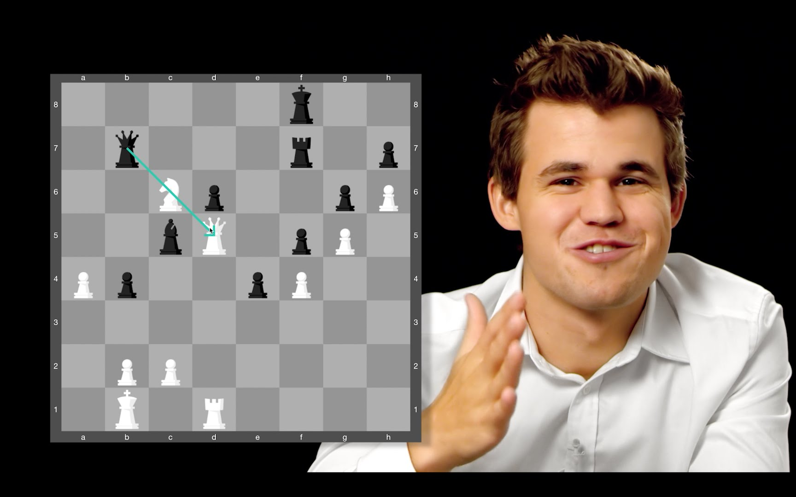
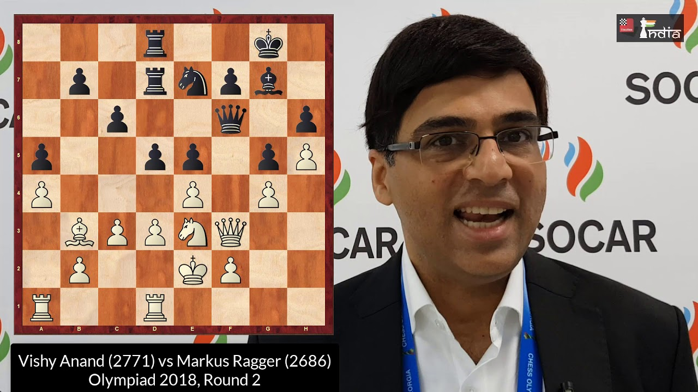
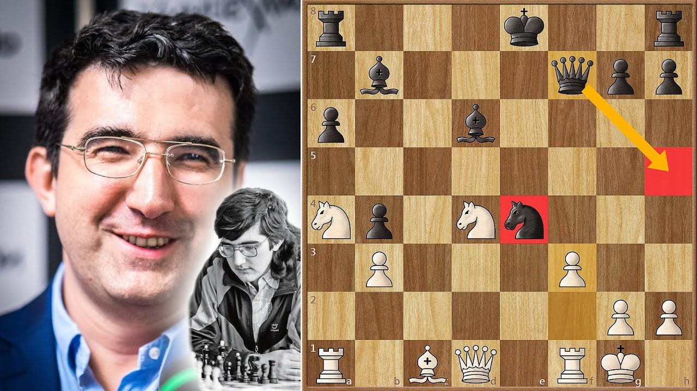

GM Magnus Carlsen

Bio
Sven Magnus Øen Carlsen(Norwegian: [svɛn ˈmɑŋnʉs øːn ˈkɑːɭsn̩] born 30 November 1990 is a Norwegian chess grandmaster who is the current World Chess Champion, World Rapid Chess Champion and World Blitz Chess Champion.Carlsen first reached the top of the FIDE world rankings in 2010, and trails only Garry Kasparov as time spent as the highest rated player in the world. His peak classical rating of 2882 is the highest in history.
Carlsen became World Chess Champion in 2013 by defeating Viswanathan Anand. In the following year, he retained his title against Anand, and won both the 2014 World Rapid Championship and World Blitz Championship, thus becoming the first player to hold all three titles simultaneously; a feat he repeated in 2019. He defended his classical world title against Sergey Karjakin in 2016, and against Fabiano Caruana in 2018.
GM Viswanathan Anand

Bio
Viswanathan "Vishy" Anand (born 11 December 1969) is an Indian chess grandmaster and multiple-time World Chess Champion in standard, rapid, and blitz time controls. He became the first grandmaster from India in 1988, and is one of the few players to have surpassed an Elo rating of 2800, a feat he first achieved in 2006.
Anand is a five-time world chess champion. He held the FIDE World Chess Championship from 2000 to 2002, becoming the first Asian to do so. He became the undisputed World Champion in 2007 and defended his title against Vladimir Kramnik in 2008. He successfully defended his title in 2010 against Veselin Topalov, and again in 2012 against Boris Gelfand. In 2013, he lost the title to challenger Magnus Carlsen, and lost a rematch to Carlsen in 2014 after winning the 2014 Candidates Tournament.
GM Vladimir Kramnik

Bio
Vladimir Borisovich Kramnik
(Russian: Влади́мир Бори́сович Кра́мник; born 25 June 1975) is a Russian chess grandmaster. He was the Classical World Chess Champion from 2000 to 2006, and the undisputed World Chess Champion from 2006 to 2007. He has won three team gold medals and three individual medals at Chess Olympiads.
In 2000, Kramnik defeated Garry Kasparov and became the Classical World Chess Champion. He defended his title in 2004 against Péter Lékó, and defeated the reigning FIDE World Champion Veselin Topalov in a unification match in 2006. As a result, Kramnik became the first undisputed World Champion, holding both the FIDE and Classical titles, since Kasparov split from FIDE in 1993.